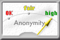
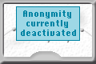
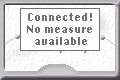

|  |
Ein Bild wie dieses zeigt an, dass Sie mit einem Anonymisierungsdienst verbunden sind.
Der Zeiger gibt einen ungefähren Wert für Ihre Anonymität an.
Je mehr Benutzer in einer Anonymisierungs-Kaskade aktiv sind und je mehr Daten von diesen versendet werden, desto höher ist Ihre Anonymität.
|
|  |
Dieses Bild erscheint, wenn die Anonymität ausgeschaltet ist. Abhängig von der Einstellung, die Sie hier getroffen haben, wird dabei der Verkehr ins Internet kommentarlos blockiert oder nur nach Bestätigung zugelassen. |
|  |
Wird dieses Bild gezeigt, wurde eine Verbindung zum Dienst hergestellt und Sie können auch anonym surfen, jedoch konnten vom InfoService keine Informationen über Anzahl der Nutzer und Verkehr geholt werden. Das kann an einem Fehler im InfoService liegen, an einer langsamen Internetanbindung oder einfach daran, dass Sie JonDo die automatischen InfoService-Anfragen verboten haben. |
 |
Während JonDo versucht, eine Verbindung zu einem Anonymisierungsdienst herzustellen, wird dieses Bild gezeigt. Währenddessen wird jede HTTP/HTTPS/FTP-Verbindung ins Internet über JonDo blockiert.
Dies ist erst wieder möglich wenn JonDo sich verbunden hat oder wenn der Verbindungsversuch abgebrochen wurde. |